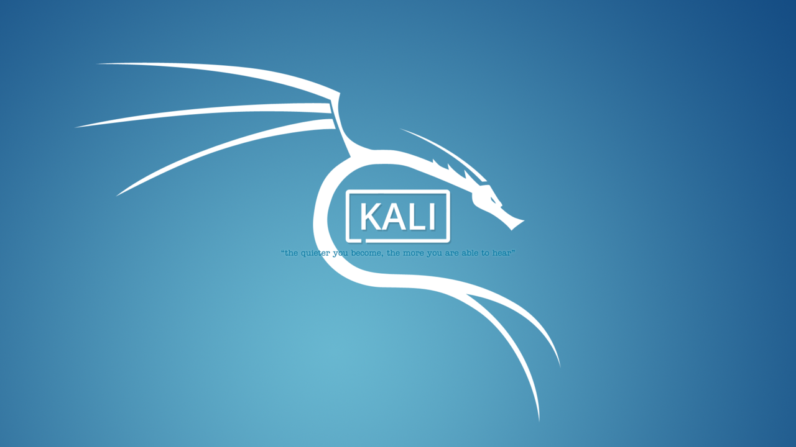

Информационная безопасность — состояние сохранности информационных ресурсов и защищенности законных прав личности и общества в информационной сфере.
Информационная безопасность – это процесс обеспечения конфиденциальности, целостности и доступности информации.
Конфиденциальность: Обеспечение доступа к информации только авторизованным пользователям.
Целостность: Обеспечение достоверности и полноты информации и методов ее обработки.
Доступность: Обеспечение доступа к информации и связанным с ней активам авторизованных пользователей по мере необходимости.
Parrot Sesurity OS
Набирающий популярность security-дистрибутив, основанный на Debian-linux. Довольно простой в освоении, подходит и для новичков и для профессионалов. Этот дистрибутив нацелен как на проведение тестирования на проникновение, так и на анонимную работу в сети Интернет.
Довольно легкий и эффективный инструмент, многие security специалисты нашли в нем замену все более «прожорливому» Kali, тем более что Parrot использует репозитории Kali для обновления. Использует оболочку MATE и дисплей-менеджер LightDM.
По фукнционалу он похож на Kali Linux, здесь тоже вместе с системой поставляется огромное количество специального программного обеспечения для тестирования безопасности.
Kali Linux

Kali linux представляет из себя дистрибутив, содержащий множество утилит для проведения тестирования
на проникновение — от анализа уязвимостей веб-приложений, до взлома сетей и сервисов и закрепления в системе.
Проект создали Мати Ахарони и Макс Мозер.
Предназначен прежде всего для проведения тестов на безопасность.
Наследник развивавшегося до 2013 года на базе Knoppix дистрибутива BackTrack.